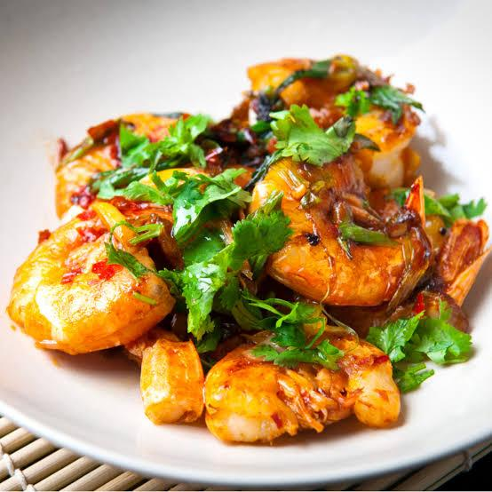

prawns chilli
ingrediants
- 1 pound large prawns, peeled and deveined
- 2 tablespoons vegetable oil
- 1 small onion, diced
- 2 cloves garlic
- 1 small red bell pepper
- tomatoes
- 1 teaspoon chilli flakes
- 1/2 teaspoon paprika
- Salt and pepper, to taste
- 1/4 cup chicken broth
Heat oil in a pan over medium-high heat. Add the onion, garlic, and red bell pepper. Cook until the vegetables are tender. Add the prawns and cook until they're pink and just cooked through. Add the diced tomatoes, chilli flakes, paprika, salt, and pepper. Stir well. Add the chicken broth and soy sauce (if using). Bring the mixture to a simmer. Reduce the heat to low and let the sauce thicken for a few minutes. Serve the Prawn Chilli hot, garnished with fresh cilantro.